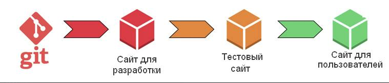
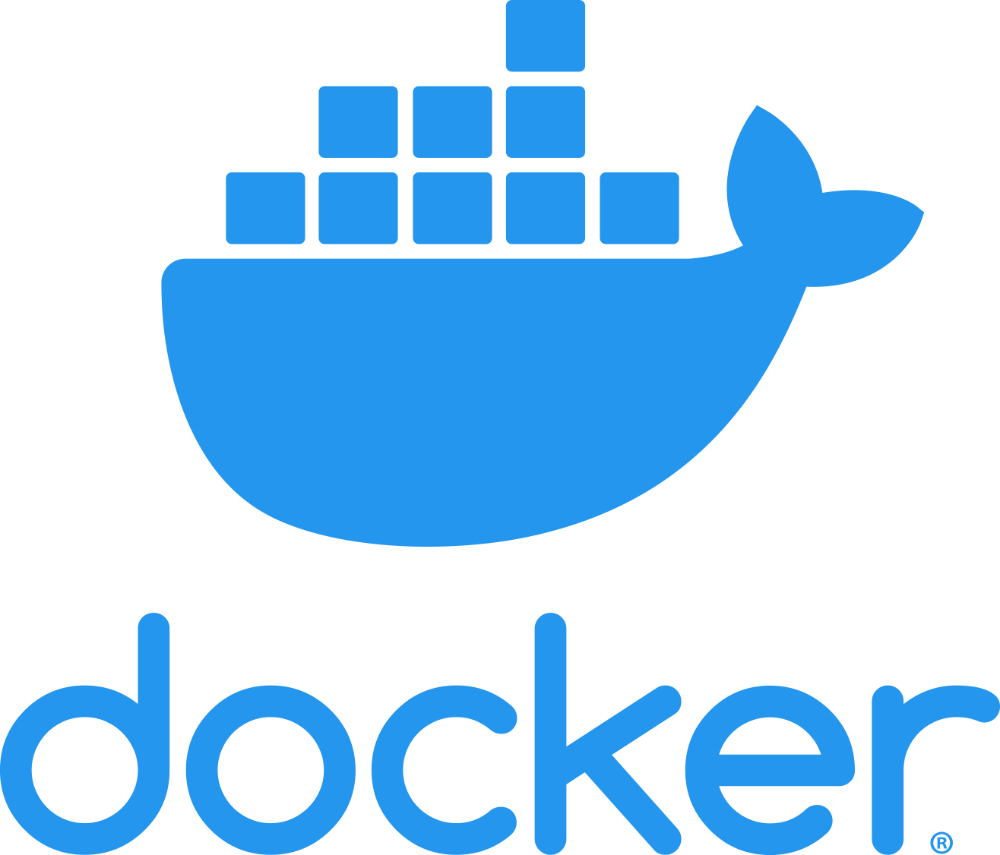
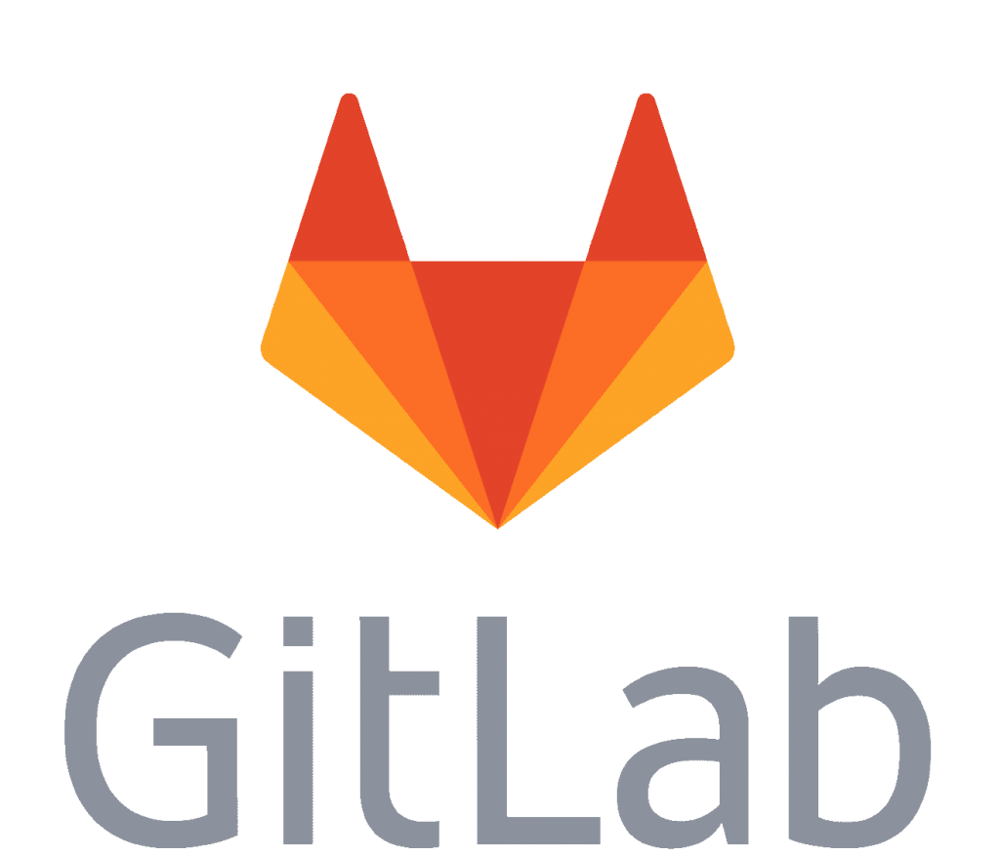
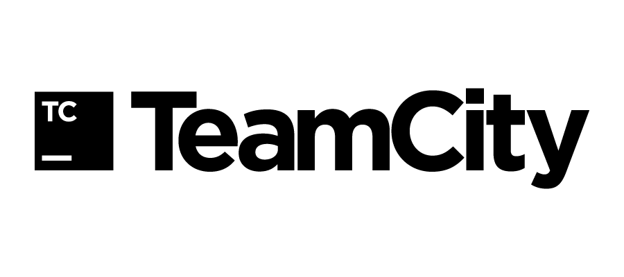

Проблема
Есть в разработке программ определённые трудности. Любая программа — это сложная система, все элементы которой связаны друг с другом, и изменения в одной части могут вызвать изменения в другой, порой фатальные. Как в фильме «Эффект бабочки», помните?
При разработке и особенно при развитии сайта код постоянно редактирует в разных местах несколько человек: SEO-специалисты, контент-менеджеры, программисты. Чем сложнее проект, тем больше команда, тем больше правок, и тем выше риски.
Небольшая опечатка может вызвать критическую ошибку, и искать её будут несколько часов по всем изменениям, и писать придётся по очереди, в противном случае ты никогда не знаешь, актуален ли твой код.
Доставка
Программисты решили эти проблемы весьма элегантно с помощью CI/CD (continuous integration, Continuous delivery) и юнит-тестирования.
Вообще, процесс разработки программы весьма похож на конвейерное производство: каждый собирает свою «деталь», она поставляется к остальным, после проходит этап их сборки и объединения в целый продукт.
Задачи CI/CD проста:
1) сборку деталей осуществлять как можно чаще, непрерывно, вместо сборки в конце
2) обнаружить ошибку как можно раньше, желательно без усилий
3) всё это максимально автоматизировать
Как это работает
- Берём сервер с основным сайтом, который доступен пользователям. «Боевой» или «продакшн», как больше нравится.
- Берём ещё сервер, там располагаем полную копию основного. Это будет тестовый сайт.
- Ещё одну копию отдадим программистам на растерзание, это будет сайт для разработки, «девелоперский».
- Связываем все перечисленное системой контроля версий Git. Это инструмент для обновления кода до определенной версии, их сохранения всех версий с возможностью посмотреть разницу и быстро вернуться к любой существующей.
Процесс
Кроме правильной настройки трёх серверов нужен ещё и правильный процесс поставки готового кода.
Допустим, мы разрабатываем новую форму обратной связи на лендинг. Разработчик возьмёт текущую версию кода страницы, изменит его, и выложит новую версию на сайт для разработки.
Если нет никаких ошибок, версия отправляется на тестовый сервер, где происходит полная проверка как самой функции, так и всего сайта в поисках ошибок в связанных частях.
Всё в порядке? Код обновляется до этой версии на «боевом сайте» и ещё раз проверяется.
В это время второй программист может делать другую задачу, регулярно стягивая изменения. Если на момент поставки его версии будет конфликт с текущей, система покажет ему разницу, чтобы он принял верное решение и актуализировал свой код.

В любой момент при обновлении и после него может быть обнаружена критическая ошибка. В таком случае код любого из наших сайтов можно почти мгновенно изменить до последней рабочей версии и исправить ошибку без рисков для работоспособности.
Автоматизация
Подождите, а где же автоматизация? Носить версии туда-сюда и постоянно проверять требует времени! Где непрерывность?
Для завершения настройки CI/CD потребуется автоматизировать создание версий, и тестировать мелкие и средние задачи и их влияние на другие функции без участия человека. При объемных изменениях совсем без тестировщика не обойтись.
Автоматизацией выпуска версий и их путешествия по сайтам занимаются специальные программы. Мы используем Docker, GitLab и Teamcity.
Проверяем код с помощью модульного тестирования, или UNIT-тестов.



UNIT-тесты
Программист реализует не только саму функцию, но и проверку результатов её работы и корректность вывода ошибок. Такими тестами нужно разработать для всех важных для стабильной работы модуле.
Если при изменении кода функции любой тест даёт неожиданный результат — версия не выпускается, разработчик продолжает огтладку. Если всё в порядке, то она создается автоматически, и попадает на следующий сервер.
Результат
CI/CD даёт возможность разработчику комфортной синхронной и быстрой работы над проектом, а сайту — стабильность работы и возможность восстановления любой версии за пару минут.